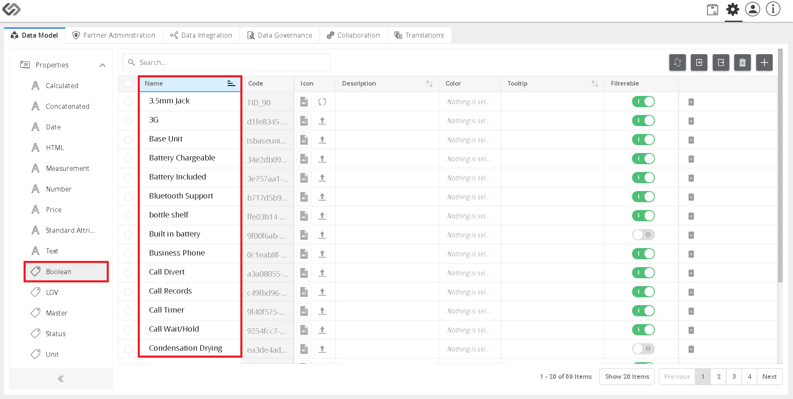
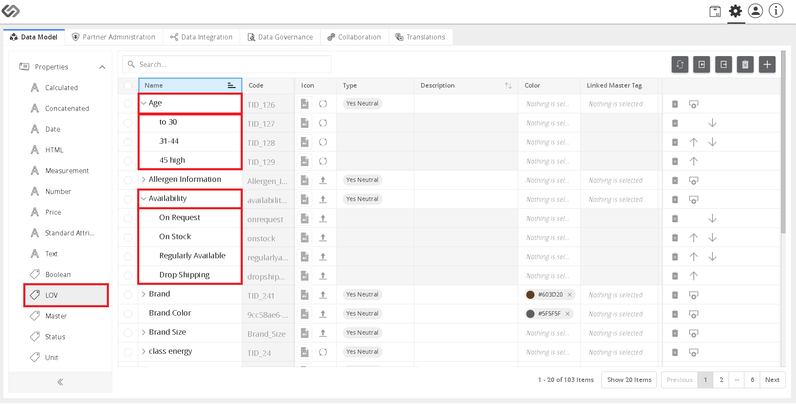
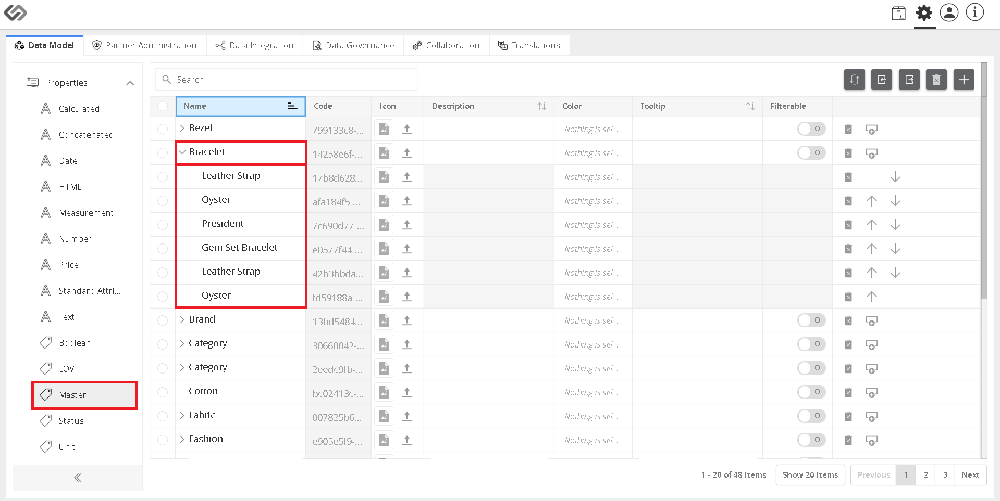
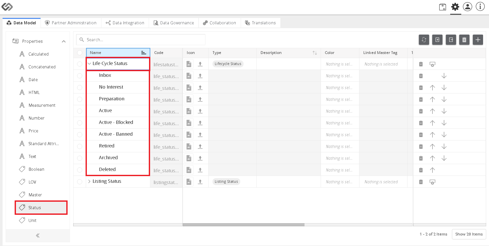
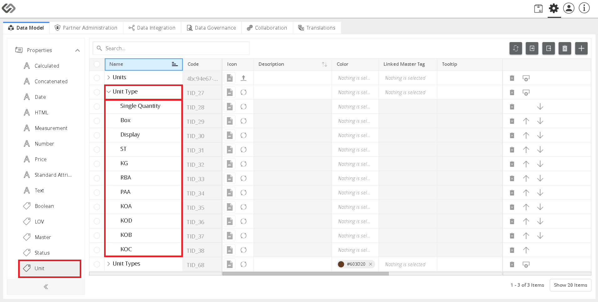

Tags¶
A tag is a multi-valued characteristic or property of the component that can have multiple values at a time. A user can select one or more options for the value that will then be attached to a product. When a property can have one or more options as its value, it can be defined as a tag in the system (which is the main difference from an attribute which has only one value). The properties precede with a tag icon are the tags in the system.
Example:
The height of a dining table can either be 30 inches, 10 inches, 20 inches, and so on. The Height characteristic of a dining table will be defined as a tag in the system.
- Boolean
- LOV
- Master
- Status
- Unit
Boolean¶
This type of tag gives a user a selection of two options for its value. Comparing it to an attribute, an attribute can take only one value at a time and not a selection that a user can choose from. Examples for this tag are options for True or False, 0 or 1, Enabled or Disabled, Available or Not Available, and so on.
Example:
A manufacturer wants to keep track of the availability of his products. He can use a Boolean Attribute to keep track of the availability. The Boolean has two options: Available and Not Available. The attribute can only have one value at a time, either available or not available. If a product is available at a moment, then the attribute value will be Available, and if the product is not available at a moment, then the attribute value will be Not Available.
LOV¶
LOV is an abbreviation for List of Values. LOV tag is a multi-valued property that can have multiple options as its value. A user can define multiple values for an LOV tag.
Example:
A clothing manufacturer wants to keep track of the age group who buys his products. A manufacturer can define a single LOV tag for the age, which can be set to have different age brackets. This tag can have multiple options like 0-30, 31-44, greater than 45 and others. Now, the manufacturer can use this tag to keep track of the age group.
Master¶
A Master tag is a multi-valued property that can have multiple options as its value. A Master tag can be linked with multiple LOV tags. When a Master tag is linked with an LOV tag, an LOV tag will inherit multi-valued options of a Master tag as its value. In addition to that, a Master tag is also useful in creating hierarchy levels of taxonomies. Whenever a user is creating a hierarchy level to define a taxonomy, he will have an option to use existing Master tags. Moreover, whenever a user will create a new hierarchy level of taxonomy, it will reflect in the list of Master tags.
Example:
A furniture manufacturer wants to keep track of the color of all the products. All the products have different colors. A manufacturer can define a single LOV tag for color. This color tag can have multiple options for example, Red, Black, Blue, Grey, and so on. Now, the manufacturer can use this tag to keep track of the colors for all the products.
Status¶
A Status tag is a multi-valued property that can have multiple options as its value. It can be considered as a special type of LOV that is used to track different types of status in the system. For example, we have a product lifecycle status, product availability status, and so on.
Example:
A manufacturer wants to keep track of the life cycle status of a product, whether it is Active, Inactive, Retired, etc. He can define a Status tag for this and then use this tag to set the product status.
Unit¶
A Unit tag is a multi-valued property that can have multiple options as its value. It is used only in Unit classes to define the context. These tags are used as unit tags while defining the context in the Unit classes.
